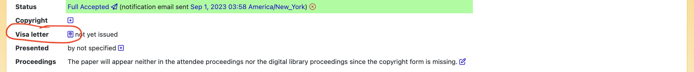

Foreign participants entering Canada must hold a valid passport and may need a visitor VISA. Further information about visitor VISA requirements is available at: https://www.canada.ca/en/immigration-refugees-citizenship/services/visit-canada/about-visitor-visa.html
Visa letters can be requested through EDAS, using the link that appears on your paper’s page
Please keep in mind that VISA arrangements are the responsibility of attendees and may take time to be completed.